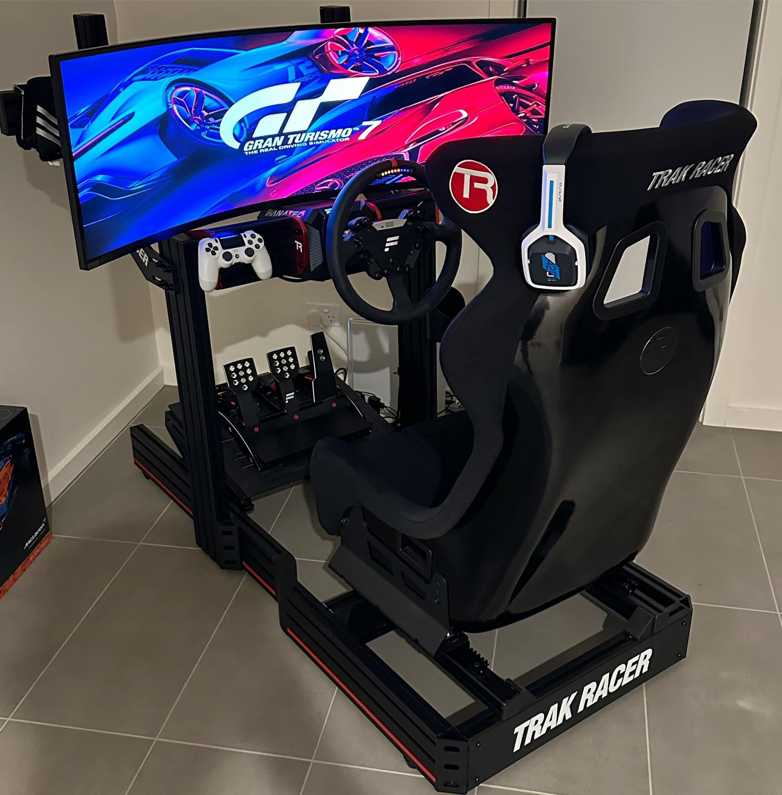

My top three hobbies include sim racing, developing new software and creating digital art in adobe photoshop.

These hobbies keep me engaged and help me develop my skills in a fun way like for instance developing new software, I aspire to become a software engineer and this is a good way to build and get experinece in developoing apps to improve my portfolio and resume. Digital art is also a great way for me to improve my graphic design skills as it is a good way for me to make money on the side while going to school, it can be challenging at times tho as it needs its own time aside from school work and with ever arriving assignemnts I have to push it to the side once in a while to study.
"Its either you work towards your goals now or you sit and keep dreaming of what life could be" a quote said alot by my freind,my older brother , Vali. It really resonates with me on a deeper level because he is the one who continues to motivate me to work hard so I can live the higher life we have always dreamed of. I met some years ago during the quarantine and we became close friends due to our shared of interests of cars, sports or random gimmicks.The thing that makes him my hero is his continued support to my goals and is always the one who is motivating me to better in life and calling me out when im performing below the standard he helped me established for myself.
LLM such as ChatGPT,Claude and Copilot must be used as a tool not a crutch is a very interesting saying as it really says that persons should use AI to enhance their capabilities, not replace their own thinking and problem-solving skills. ALot of students use AI to complete menial tasks such as coding assignments or writing essays, which is not the intended use of AI. The intended use of AI is to enhance human capabilities, not replace them. It is important for students to learn how to use AI as a tool to enhance their own learning and problem-solving skills, rather than relying on it to do the work for them. When students rely or make AI do the work for them without proper understading the concepts and logic behind it, they fall short in the future as they have good looking grades but are not able to apply the concepts and logic in real life scenarios. This is a very important lesson for students to learn as they prepare for their future careers. In the world where skills are more important than grades, this is not a good practice students should follow as they will be left behind in the future as they will not be able to compete with their peers who have a better understanding of the concepts and logic behind the work they are doing. Firstly they damage their own learning and understanding causing them to use AI as a daily mentor, calling on it to do the simplest of tasks just because they cant be bothered.THey might not see it now but later down in life where they fall situations where they cant get a hold of and AI tools at hand and it will display how badly they depend on this tools to do the work for them. This is a very important lesson for students to learn as they prepare for their future careers. Losing basic skills like these are very detrimental to students